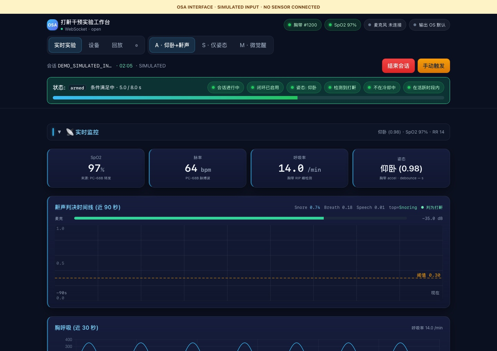
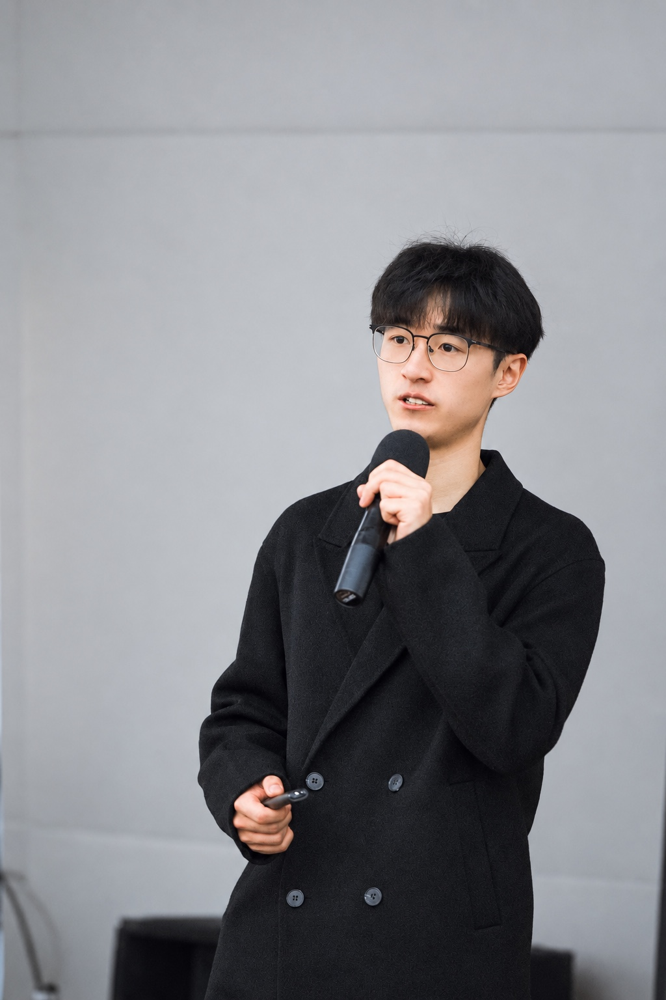

Real-time systems
OSA research platform
Isolated audio capture, inference, and BLE I/O across threads and event loops; streamed runtime state to a Vue console.
SIZHANG XU · 徐思张
I’m a UW–Tsinghua graduate student. At ByteDance Seed and Sohu, I worked on LLM evaluation and AI authoring tools. I also build research software and multi-agent reporting workflows.
Seattle area · Seeking Summer 2027 internships
Software engineering / AI product management

SELECTED WORK

Isolated audio capture, inference, and BLE I/O across threads and event loops; streamed runtime state to a Vue console.
180 graphs · 30 topics · LLM-as-judge
Built a resumable async evaluation runner with bounded concurrency, retries, and JSON recovery; compared 180 generated outputs.
Extended TradingAgents with A-share adapters, retry backoff, and custom LangGraph nodes for policy analysis and report generation.

Implemented browser-history routing, persistent reading status, and keyboard navigation; optimized responsive image delivery.
EXPERIENCE
AI product internships with hands-on implementation, evaluation, and prototyping.
Built and iterated a Python/LangGraph evaluation prototype, adapting reference reasoning and diagnosis to available answers and rubrics. Created 30+ prompt templates; reviewed 700+ reports to refine the analysis.
Read the evaluation caseDesigned an AI authoring workflow and six-dimension evaluation rubric. Wrote Python end-to-end tests and regression cases to compare model and prompt changes.
Built three C#/Unity interactions for a wearable force-feedback prototype; evaluated timing and feedback with eight participants.
DESIGN FOUNDATIONS
Four university projects, 2021–2024. From user research and early sketches to interfaces and physical prototypes.
Original project pages, including research, design development, and prototypes. Open any page at full size to read the details.
BACKGROUND
I studied Industrial Design at Shanghai Jiao Tong University, graduating first in a class of 30 and receiving the National Scholarship. I now study in the UW–Tsinghua GIX dual-degree program, with a lab affiliation at PI Lab, Department of Computer Science and Technology, Tsinghua University.
At SJTU, I served on the university Student Union Presidium, as Executive President of the School of Design Student Union, and on the Nanyang News Agency Presidium as Deputy Secretary-General. University announcement
That background shows up in my software work: I pay attention to what a user sees when a model gives a poor answer, a sensor disconnects, or an experiment needs another look.
University of WashingtonM.S. Technology Innovation · Expected Jun 2028GIX dual-degree program · Tsinghua PI Lab, Department of Computer Science and Technology
Shanghai Jiao Tong UniversityB.Eng. Industrial Design · 2021–2025
For software engineering and AI product internships.
AI product management PDFSoftware engineering PDF